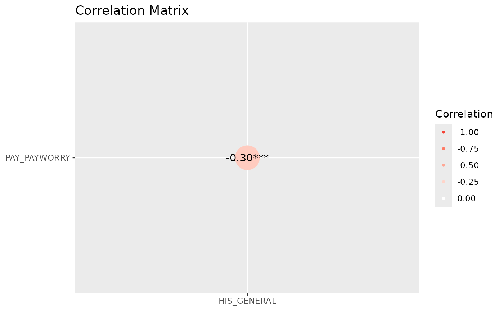

library(icorp26)
library(easystats)
# Attaching packages: easystats 0.7.6
✔ bayestestR 0.18.1 ✔ correlation 0.8.8
✔ datawizard 1.3.1 ✔ effectsize 1.0.2
✔ insight 1.5.2 ✔ modelbased 0.16.0
✔ performance 0.17.1 ✔ parameters 0.29.2
✔ report 0.6.4 ✔ see 0.14.1
library(ggplot2)
correlation::correlation(rss1,
select =
c("PAY_PAYWORRY",
"HIS_GENERAL"),
method = "polychoric",
include_factors = TRUE
) ->
results
plot(summary(results),
show_data = "points")